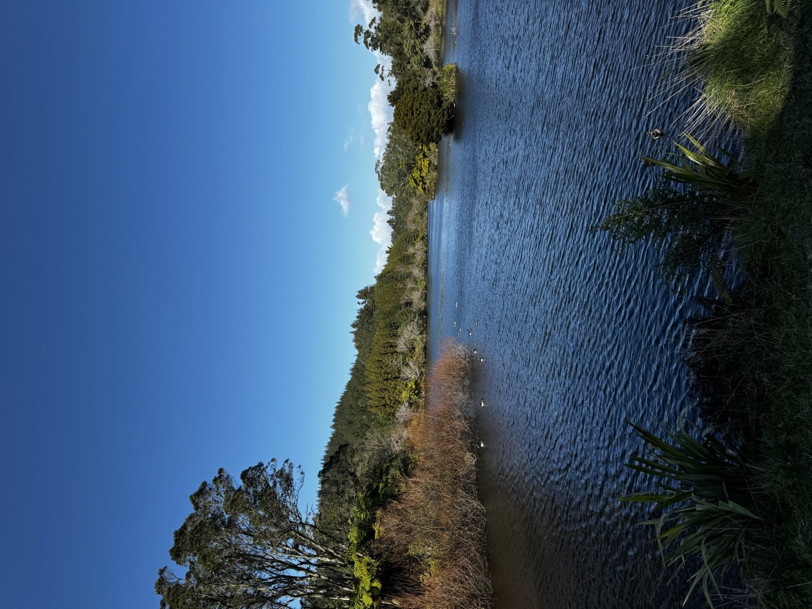
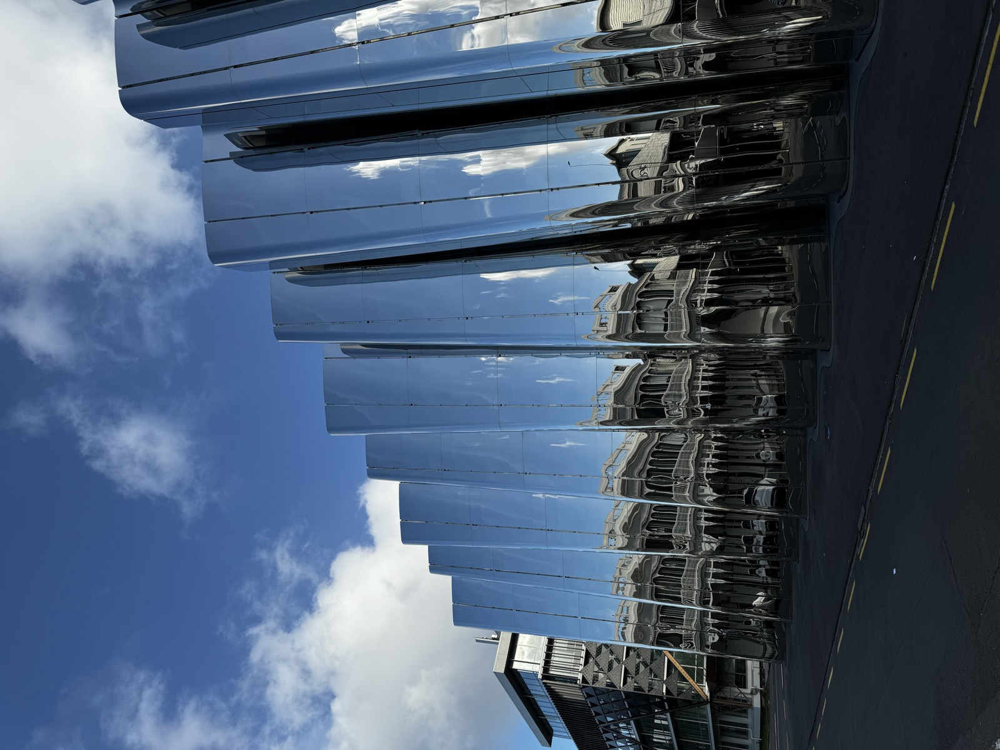
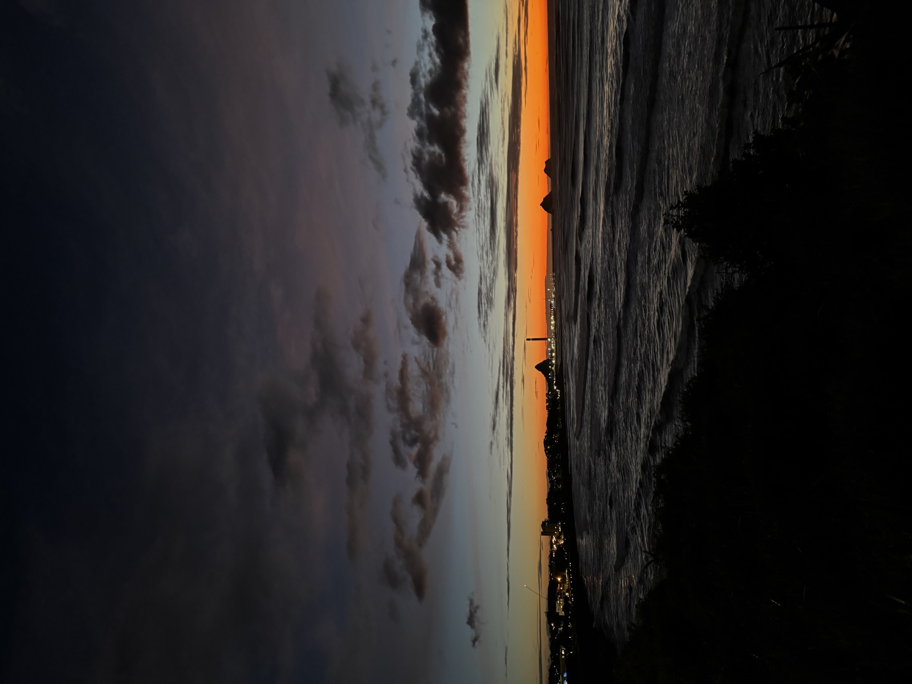
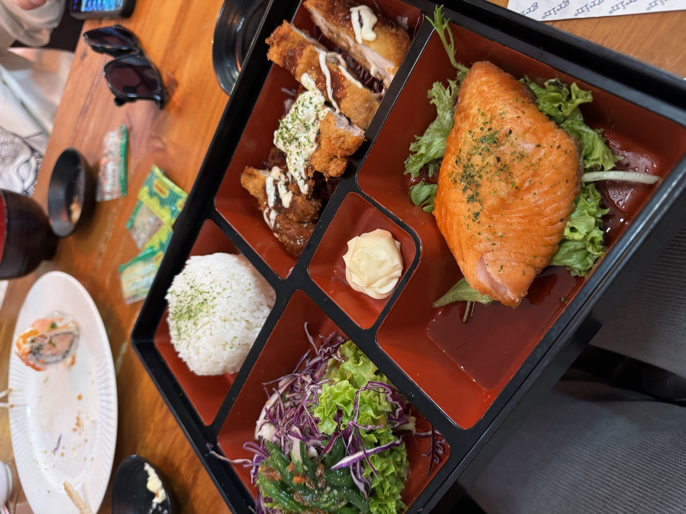

Best for
Readers who want one New Zealand chapter with mountain, water, city texture, and an easy evening close.
New Zealand / New Plymouth / Jul 2024
New Plymouth became the strongest photo chapter of the route: mountain views, calm lake paths, a reflective city building, a sunset edge, and one quiet dinner pause.
This chapter is the easiest New Zealand page to recommend visually. It is not overloaded with activities; it works because the images have contrast: mountain, water, mirror-like architecture, evening light, and one simple table moment.

After the grey steam and lake weather, New Plymouth felt cleaner, wider, and easier to photograph.
The Taranaki view gave this chapter its shape. It had the kind of winter clarity I always hope for on a road trip: bright sky, calm water, and the mountain sitting quietly in the distance without needing a dramatic caption.
It also kept the route from becoming visually one-note. In the same stop, the page moves from lake and mountain to reflected city surfaces, sunset, then dinner.
New Plymouth, in moments
A compact visual route through the clearest stop of the New Zealand pages.
Mountain
The cleanest frame of the whole road loop.

Lake pathA calm pause before the city texture changes.

DesignA sharper visual switch after the lake and mountain.

EveningA darker close to the most complete photo chapter.

DinnerNot a review, just the relief of sitting down after moving.
This is why New Plymouth became the cleanest chapter visually: nature, design, and evening light all fit together easily.
New Plymouth chapter feeling
Mountain Mood
The Taranaki view gave this chapter its shape. It felt clean in a way the earlier Rotorua and Taupo chapter did not: less mist, less pressure from the clouds, more room to stand there and look.
City Corner
After natural views, the reflective building felt like a sudden style switch. It gave New Plymouth a more modern texture and stopped the chapter from becoming only lakes and skies.
Food Note
This was not a full food review moment, more like a quiet road-trip dinner. Still, the tray photo belongs here because it captures that small relief of sitting down after moving all day.
Best for
Readers who want one New Zealand chapter with mountain, water, city texture, and an easy evening close.
Personal take
If Rotorua and Taupo were the moody opener, New Plymouth was the chapter that looked the most complete on camera.